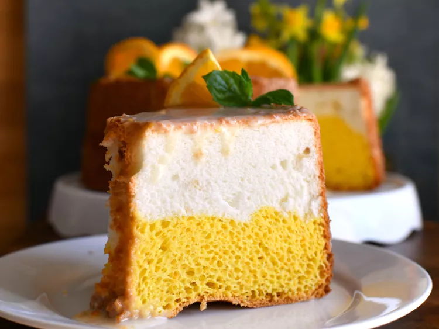

Daffodil Cake

This is a great spring angel food-type of cake made with two flavors of batter alternated in a tube pan.
Ingredients
- 10 egg whites
- 1 teaspoon cream of tartar
- ½ teaspoon salt
- 1 ¼ cups white sugar, divided
- ¾ cup sifted cake flour
- 6 egg yolks
- ½ teaspoon orange extract
- ½ cup sifted cake flour
- 1 teaspoon vanilla extract
Directions
Step 1
- Preheat oven to 350 degrees F (175 degrees C). Wash the tube pan in hot soapy water to ensure it is totally grease-free.
Step 2
- In a large dry glass or metal bowl, whip egg whites until frothy. Add cream of tartar and salt, and continue to whip. When the whites can form soft peaks, gradually sprinkle in 1 cup sugar, while continuing to beat until stiff peaks form.
Step 3
- In a separate bowl, beat egg yolks with 1/4 cup sugar until thick and lemon-colored. Blend in 3/4 cup cake flour and orange extract. Fold half of the whipped egg whites into the yolk mixture.
Step 4
- Fold the remaining 1/2 cup of cake flour into the egg whites, along with the vanilla. Spoon about 1 cup of batter at a time, alternating colors, into the prepared pan.
Step 5
- Bake for 30 minutes in the preheated oven. Reduce heat to 325 degrees F (165 degrees C) and continue baking for another 20 minutes, or until the top of the cake springs back when pressed.
Step 6
- Without removing cake from pan, invert pan onto a wire rack to cool. Once completely cooled, remove cake from the pan and frost with your choice of frosting. Lemon Cream Cheese Frosting works quite well.
Home